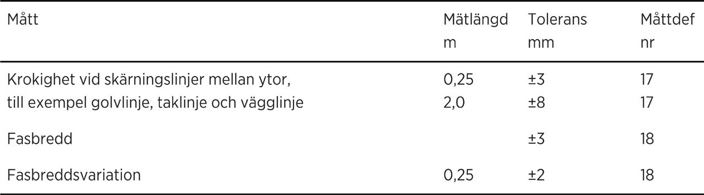
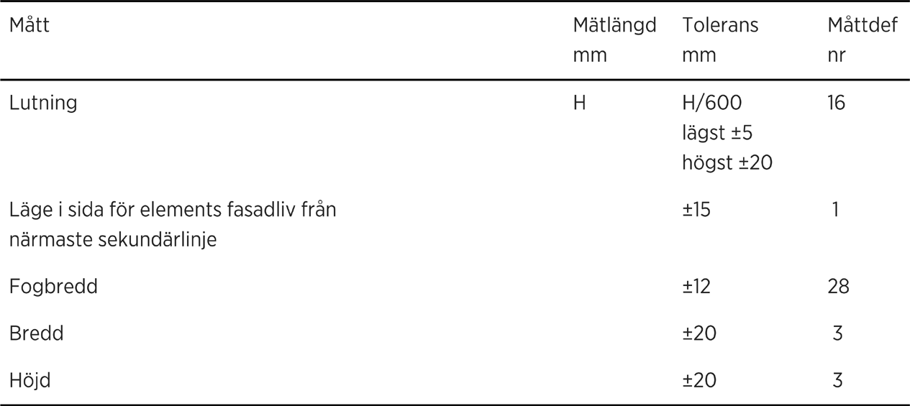
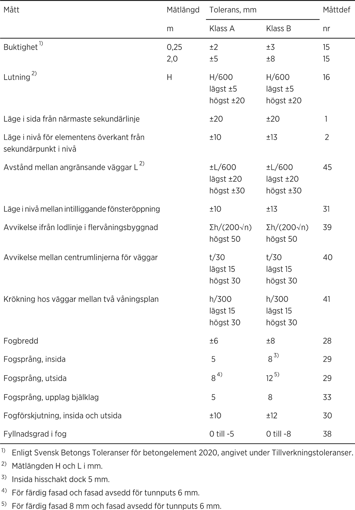
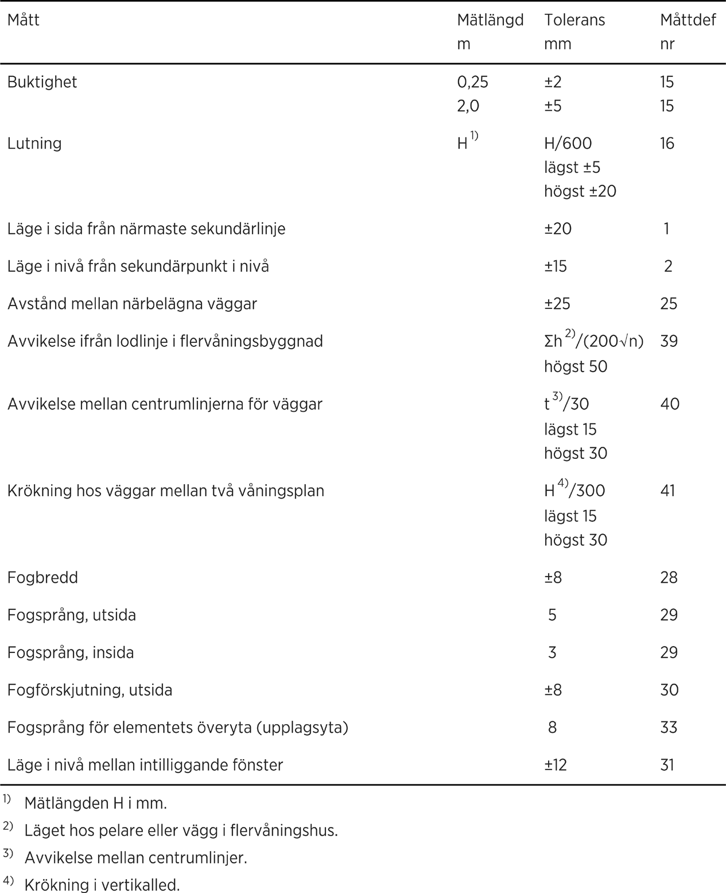
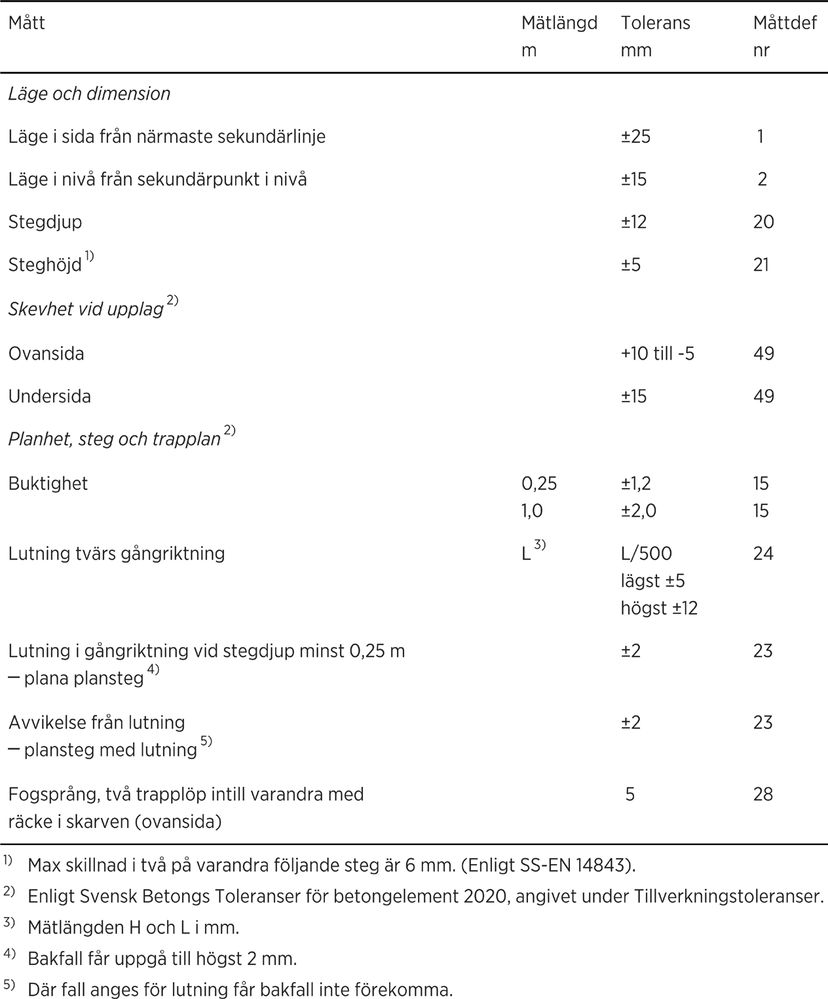

SAMMANSATTA BYGGDELAR OCH INSTALLATIONSSYSTEM |
|
01 |
SAMMANSATTA BYGGDELAR |
01.S |
Sammansatta byggdelar i hus |
|
TOLERANSER |
|
Allmänt |
|
Toleranser i AMA definieras med numrerade måttdefinitioner som förklaras i avsnittet begreppsbestämningar och måttdefinitioner i AMA. |
|
Vissa toleranser är längd- eller höjdberoende och baseras på längd (L) respektive höjd (H) angivna i millimeter, mm. |
|
Mätning ska utföras enligt YHB.27. |
|
Toleranser i AMA |
|
Undergolv och golv |
|
Mätlängden L för lutning bestäms av rummets begränsningar, oavsett om kontrollmätning utförs innan väggar monterats. |
|
Lägetoleranser |
|
Sekundärsystemen i plan (sida) och nivå (höjd) utgör referenssystem för lägetoleranser. |
|
Ursparningar |
|
Ursparningar utom för glidformsgjutna betongkonstruktioner |
|
Ursparningar, utom för fönster och dörrar, ska uppfylla kraven enligt tabell AMA 01.S/1. |
TABELL AMA 01.S/1. URSPARNINGAR, UTOM FÖR FÖNSTER OCH DÖRRAR
Mått |
Tolerans mm |
Måttdef nr |
Dimensioner |
±10 |
3 |
Läge i sida från närmaste sekundärlinje |
±20 |
1 |
Läge i nivå från sekundärpunkt i nivå |
±18 |
2 |
Vertikal eller horisontal avvikelse mellan kantlinjer för ursparningar som ska ligga i linje |
±10 |
37 |
|
Skärningslinjer, faser |
|
Skärningslinjer och faser ska uppfylla kraven enligt tabell AMA 01.S/2. |
TABELL AMA 01.S/2. SKÄRNINGSLINJER, FASER

|
Ingjutningsgods och inmurningsgods |
|
Ingjutningsgods och inmurningsgods utom för glidformsgjutna betongkonstruktioner |
|
Ingjutningsgods utom skruvgrupper ska uppfylla kraven enligt tabell AMA 01.S/3. |
TABELL AMA 01.S/3. INGJUTNINGSGODS UTOM SKRUVGRUPPER
Mått |
Tolerans mm |
Måttdef nr |
Läge i sida från närmaste sekundärlinje |
±10 |
1 |
Läge i sida nivå från sekundärpunkt i nivå |
±10 |
2 |
|
Ingjutna eller borrade skruvgrupper i betongelement, formelement av betong och platsgjuten betong |
|
Ingjutna eller borrade (kemankare) skruvgrupper ska uppfylla kraven enligt tabell AMA 01.S/4. |
TABELL AMA 01.S/4. INGJUTNA ELLER BORRADE SKRUVGRUPPER
Mått |
Tolerans mm |
Måttdef nr |
Läge i sida för skruvgrupps centrumpunkt från närmaste sekundärlinje |
±10 |
6 |
Avstånd från centrumpunkt i skruvgrupp till centrumpunkt i intilliggande skruvgrupp |
±10 (Δ1) |
44 |
Centrum mellan skruvar i grupp |
±3 (Δ2) |
44 |
Lutning grundskruv |
L/200 (Δ3) |
44 |
Överkant grundskruv |
+15–5 (Ä3) |
44 |
Vridning |
±8 |
19 |
Ingjutningsgods i glidformsgjutna betongkonstruktioner |
|
|
Ingjutningsgods i glidformsgjutna betongkonstruktioner ska uppfylla kraven enligt tabell AMA 01.S/5. |
TABELL AMA 01.S/5. INGJUTNINGSGODS I GLIDFORMSGJUTNA KONSTRUKTIONER
Mått |
Tolerans mm |
Måttdef nr |
Läge i sida från närmaste sekundärpunkt |
±80 |
1 |
Läge i nivå från sekundärpunkt i nivå |
±80 |
2 |
Läge i sida från närmaste väggliv |
+20 |
26 |
01.SC |
Ytterväggar, sammansatta |
|
TOLERANSER |
|
Utfackningselement i ytterväggar ska uppfylla kraven enligt tabell AMA 01.SC/1. |
TABELL AMA 01.SC/1. UTFACKNINGSELEMENT I YTTERVÄGGAR

|
För kallformade tunnplåtsreglar ingående i utfackningselement och dimensionerade enligt SS-EN 1993-1-3 gäller toleranskrav enligt SS-EN 1090-4. |
Ytterväggar, sammansatta - element av betong |
|
|
TOLERANSER |
|
Ytterväggar av sammansatta element av betong ska uppfylla kraven enligt tabell AMA 01.SC/31-1. |
TABELL AMA 01.SC/31-1. YTTERVÄGGAR AV SAMMANSATTA ELEMENT AV BETONG

Ytterväggar, sammansatta - element av trä eller träbaserat material |
|
|
TOLERANSER |
|
Ytterväggar av sammansatta element av trä eller träbaserat material ska uppfylla kraven enligt tabell AMA 01.SC/35-1. |
TABELL AMA 01.SC/35-1. YTTERVÄGGAR AV SAMMANSATTA ELEMENT AV TRÄ ELLER TRÄBASERAT MATERIAL

Trappor, sammansatta |
|
|
Öppning mellan plansteg ska vara högst 100 mm. |
|
TOLERANSER |
|
Trappor ska uppfylla kraven enligt tabell AMA 01.SH/1. |

|
Fogsprång mellan trapplopps översta plansteg och anslutande trapplan eller vilplan ska vara högst 1 mm. |